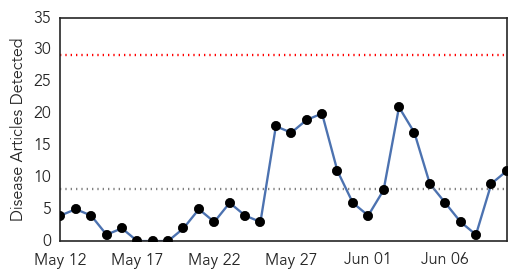
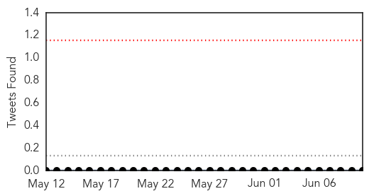
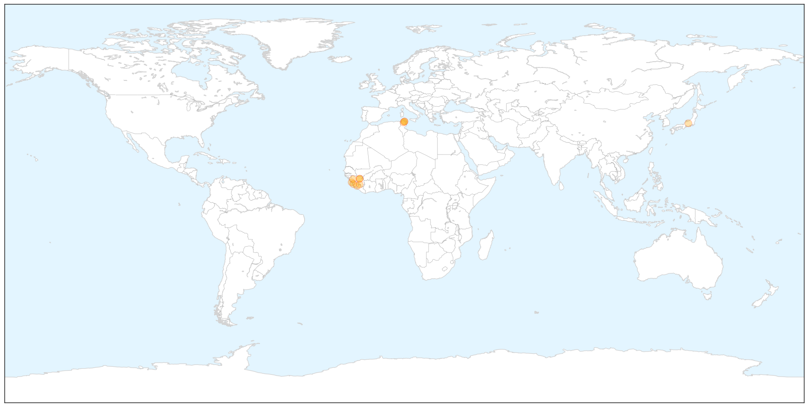

Ebola
30-Day Web Trend
0 alerts, 0 warnings

30-Day Twitter Trend
0 alerts, 0 warnings

Article Locations

X

Article Confidences

Top Articles:
- 1.000
- Can anything stop West Africa’s outbreak of Ebola?
- 1.000
- Deadly Ebola virus outbreak spreads in West Africa
- 1.000
- Sierra Leone Ebola Death Toll 'Doubles To 12 In A Week'
- 1.000
- Ebola death toll keeps climbing in West African countries
- 1.000
- Prayers, precautions in W Africa amid Ebola threat (Update)
- 0.998
- Ebola Virus Disease in West Africa 11 New Cases, 3 Deaths
- 0.998
- Sierra Leone Ebola Death Toll Doubles
- 0.997
- Ebola Death Toll Doubled in Sierra Leone: Official Statement
- 0.995
- Sierra Leone ebola death toll doubles to 12 in a week
- 0.995
- Pharmacy board schools pharmacy owners on ebola virus « Awoko Newspaper
- 0.971
- UNICEF Guinea: Humanitarian Situation Report, 4 June 2014 - Guinea
Top Tweets:
-
No tweets found for Jun 10, 2014